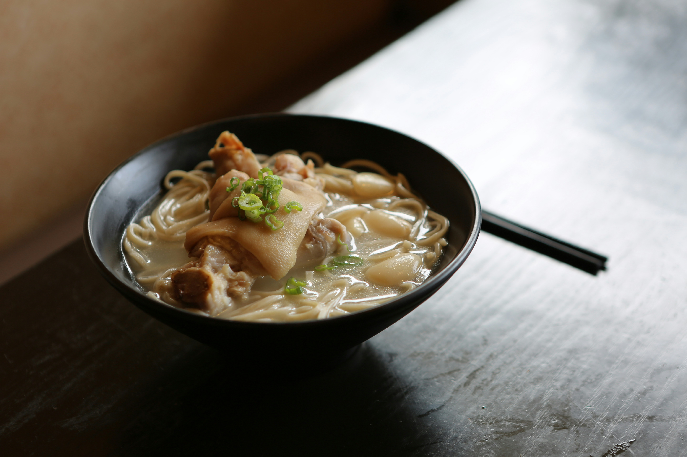
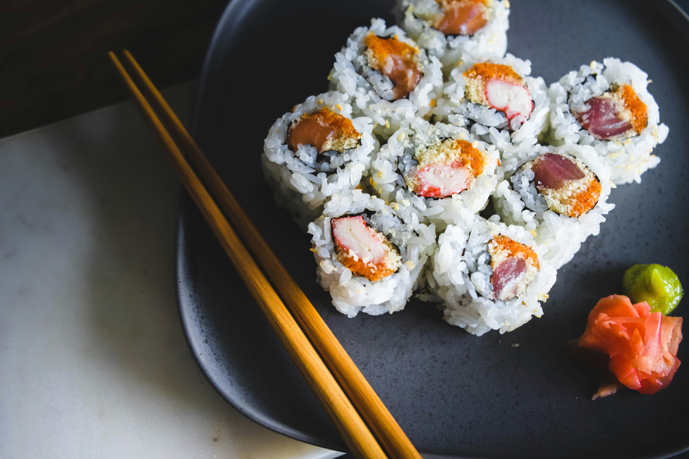
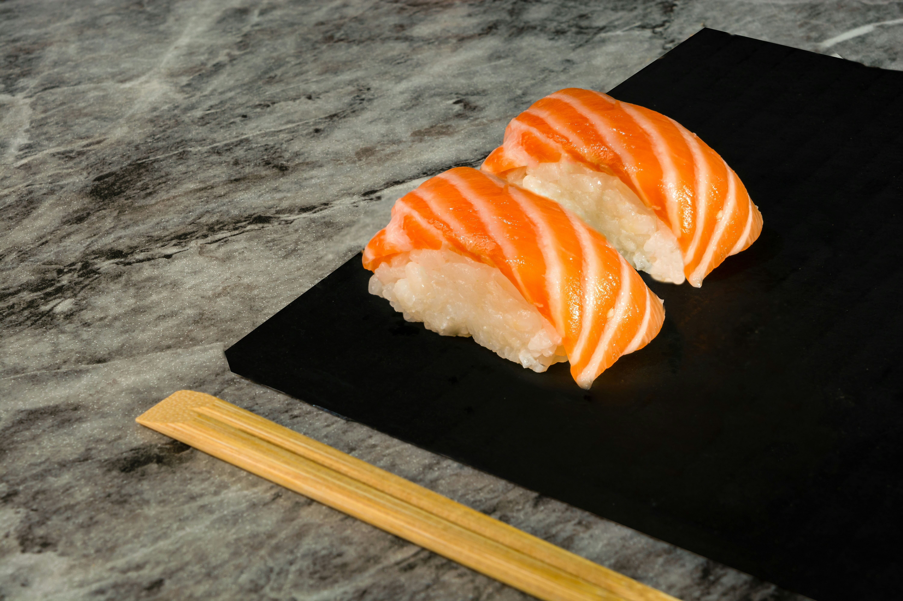
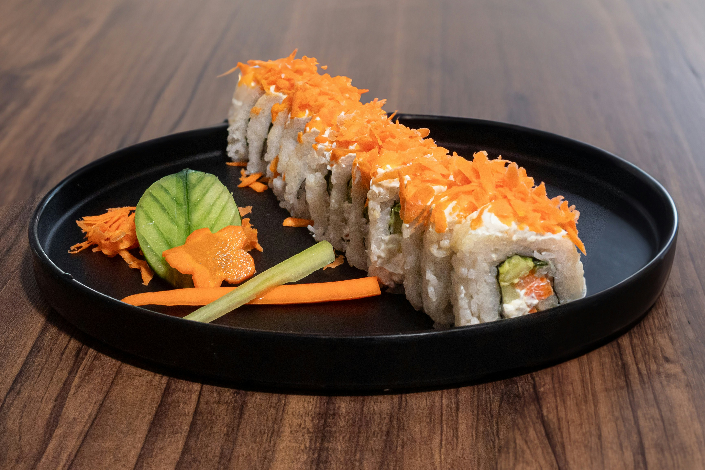

Menu
Appetizers
-
Crispy Tempura Platter
A medley of shrimp, sweet potatoes, and seasonal vegetables, lightly battered and fried to golden perfection, served with a tangy tempura dipping sauce.
$8.99
-
Spicy Tuna Tartare
Fresh ahi tuna mixed with avocado, sesame oil, and a spicy sriracha mayo, served on crispy wonton chips and garnished with microgreens.
$12.99
-
Miso Soup Deluxe
Traditional miso broth enriched with silky tofu, seaweed, and shiitake mushrooms, topped with green onions for a comforting start to your meal.
$4.99
-
Cucumber Sunomono Salad
Thinly sliced cucumbers marinated in a light vinegar dressing, paired with tender wakame seaweed and sesame seeds for a refreshing bite.
$5.99
-
Gyoza Delight
Pan-fried Japanese dumplings stuffed with a savory blend of ground pork, ginger, and garlic, served with a soy-vinegar dipping sauce.
$7.99
-
Firecracker Shrimp
Crispy tempura shrimp drizzled with a spicy aioli, balanced with a touch of honey glaze, topped with scallions and sesame seeds.
$9.99
Signature Rolls
-
Rainbow Roll
A vibrant medley of fresh tuna, salmon, and avocado layered over a California roll, creating a colorful and delicious experience.
$14.99
-
Dragon Roll
A roll filled with tempura shrimp, avocado, and cucumber, topped with unagi (eel), sliced avocado, and a drizzle of eel sauce.
$13.99
-
Spicy Volcano Roll
Spicy tuna and cucumber rolled together and topped with baked scallops, masago, and spicy mayo, creating an explosion of flavor.
$15.99
-
Crispy Spider Roll
Soft-shell crab tempura paired with cucumber, avocado, and a hint of tobiko, wrapped in nori and drizzled with eel sauce.
$12.99
-
Vegetarian Garden Roll
A fresh combination of asparagus, avocado, carrots, and cucumber wrapped in soy paper, served with a side of ginger soy sauce.
$10.99
-
Sunrise Roll
Salmon and cream cheese inside, lightly tempura-fried and topped with a mango glaze and chili flakes for a sweet and spicy finish.
$13.49
Nigiri & Sashimi
-
Tuna (Maguro)
Hand-cut slices of fresh, buttery tuna, served as tender nigiri over vinegared rice or as sashimi for a pure, unadulterated experience.
$7.99
-
Salmon (Sake)
Delicate, melt-in-your-mouth slices of salmon with a subtle, natural sweetness, perfect for both nigiri and sashimi lovers.
$7.99
-
Yellowtail (Hamachi)
A rich and buttery fish with a hint of tanginess, beautifully presented as nigiri or sashimi, garnished with scallions.
$8.99
-
Eel (Unagi)
Grilled freshwater eel glazed with sweet eel sauce, served warm on sushi rice for a savory and satisfying bite.
$9.49
-
Sweet Shrimp (Amaebi)
Succulent raw shrimp with a naturally sweet flavor, paired with its crispy fried head for a contrasting texture and taste.
$8.99
-
Scallop (Hotate)
Tender and creamy sea scallops delicately sliced, offering a luxurious and silky texture that melts in your mouth.
$10.99
Chef’s Specials
-
Sakura Blossom Roll
King crab, cucumber, and avocado rolled together and topped with thinly sliced salmon, ikura, and edible flowers for an artistic touch.
$16.99
-
Lava Flow Roll
Spicy yellowtail, cucumber, and scallions wrapped in nori, topped with seared tuna, jalapeños, and spicy aioli for a fiery finish.
$17.99
-
Golden Dragon Roll
Lobster tempura, asparagus, and avocado rolled inside, topped with mango slices, eel, and gold flakes for a show-stopping presentation.
$19.99
-
Ocean Truffle Nigiri
Salmon nigiri infused with a hint of truffle oil and topped with black tobiko and edible seaweed for a decadent twist.
$14.99
-
Midnight Pearl Roll
Squid ink rice surrounds spicy scallops and tempura shrimp, topped with squid, avocado, and a drizzle of yuzu ponzu sauce.
$18.99
-
Caviar Treasure Roll
Tuna, salmon, and yellowtail wrapped in cucumber ribbons, garnished with premium caviar and served with a light soy reduction.
$21.99